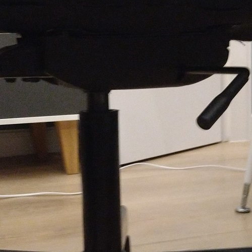
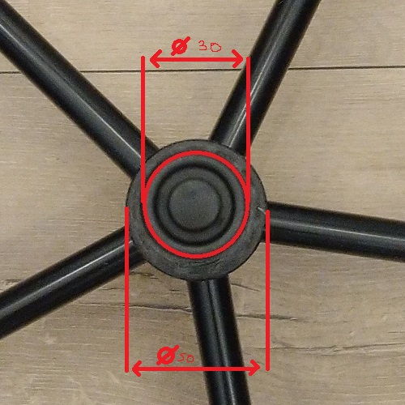
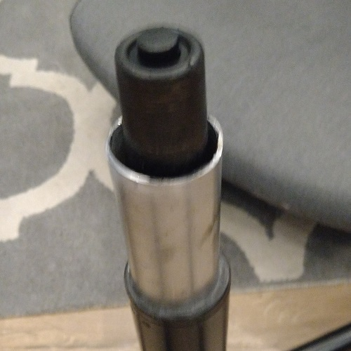
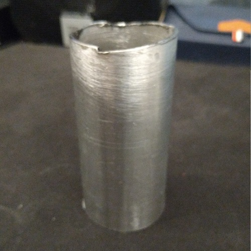
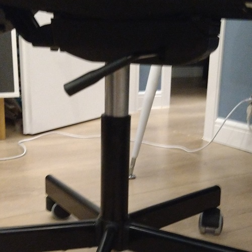

Context: My chair from ikea (flintan) has a broken actuator. New one costs about 10 euro, but I didn't want to spend that much money. So I came up with a sollution described in this post.
But before we go further, we have to make some points clear:
You will need some kind of cutter that can cut through a metal pipe (i've used angle grinder).
The chair: Borken actuator (in my case) led to some oil leakage. This means that I can get it back up, but it will drop as soon as I sit on it. To prevent it, I've used a metal pipe.
Parameters: After taking the top part of, you can see the inner and outer piece (red is marking the inner piece). The inner one has fi=30mm while outer one has fi=50mm. The pipe then has to fit in between those numbers (I think that fi=40mm is optimal). It's also important to look at the thickness of metal pipe walls. Everything has to fit. Otherwise you will have wobble.
Ordering and testing: It's best to order about 10-15cm. I've got mine for 2,5 euro from the internet. Put the tube onto the outer ring. It will propably be too much but thats good. Now we can regulate the height by cutting the pipe. Thats why we need a cutter.
Cutting: Just mark a straight line around the pipe, and cut. I doesn't have to be perfect, just remember to place a level onto it after. If it's not leveled, just grind it. It's important, because it will otherwise wobble. Be careful though. Cut about 1-2cm then check by puting pipe on outer ring. I feel ok sitting with length of 9cm.
Finish: Congratulations. You've just paid less than 1/4 of the price of the new actuator. Now you can use your chair. I do not take responsibility if you drop down from your chair.